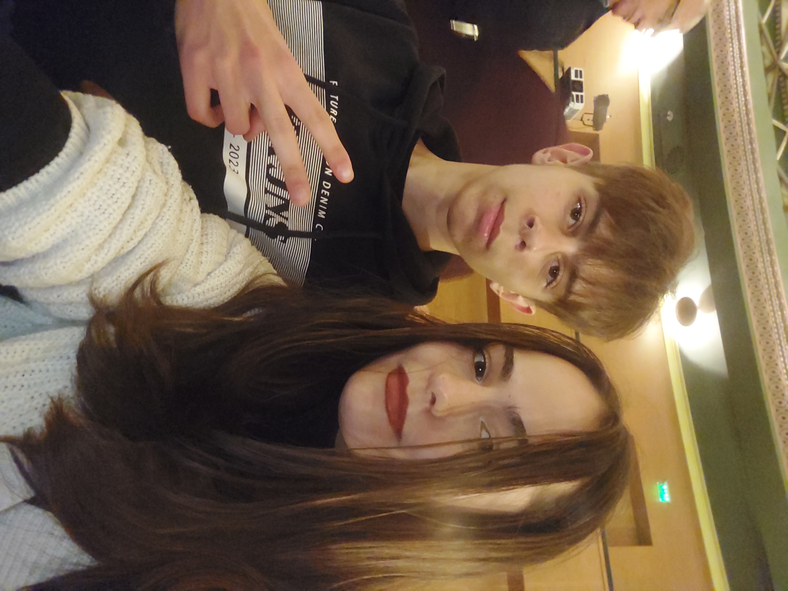

12 noiembrie 2023
Brasov
💜 Te iubesc pentru farmecul pe care l-ai avut asupra mea de la inceput 💜
Probabil e ciudat ceea ce vezi. Nu înțelegi exact unde si la ce sa te uiți. Tot ce îți cer este sa te întorci aici, zi de zi, cu un minut înainte de 21:35. Ca si
oameni, tindem sa fim foarte concentrați pe prezent si pe viitor, dar câteodată e plăcut sa te oprești si sa te uiți la drumul parcurs. Un an si șase luni e mult.
Am trecut împreună prin atâtea schimbări si stări. Nu aș ști să-ți spun exact ce simțeam acum un an, șase luni si o zi, dar aș crede ca eram confuz si speriat,
dar in același timp fericit, cu o speranța ca vom fi împreună.